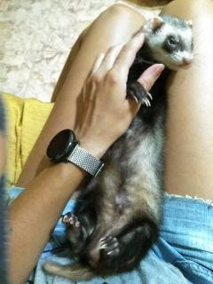

Ferrets
The ferret (Mustela putorius furo) is the domesticated form of the European polecat, a mammal belonging to the same genus as the weasel, Mustela, in the family Mustelidae. Their fur is typically brown, black, white, or mixed. They have an average length of 51 cm, including a 13 cm tail, weigh about 1.5–4 pounds, and have a natural lifespan of 7 to 10 years. Ferrets are sexually dimorphic predators, with males being substantially larger than females.
The history of the ferret's domestication is uncertain, like that of most other domestic animals, but it is likely that they have been domesticated for at least 2,500 years. They are still used for hunting rabbits in some parts of the world, but increasingly they are kept only as pets.
Being so closely related to polecats, ferrets easily hybridize with them, and this has occasionally resulted in feral colonies of polecat–ferret hybrids that have caused damage to native fauna, especially in New Zealand. As a result, New Zealand and some other parts of the world have imposed restrictions on the keeping of ferrets.
The name "ferret" is derived from the furittus, meaning "little thief", a likely reference to the common ferret penchant for secreting away small items. The Greek word ictis occurs in a play written by Aristophanes, The Acharnians, in 425 BC. Whether this was a reference to ferrets, polecats, or the similar Egyptian mongoose is uncertain.
A male ferret is called a hob; a female ferret is a jill. A spayed female is a sprite, a neutered male is a gib, and a vasectomised male is known as a hoblet. Ferrets under one year old are known as kits. A group of ferrets is known as a "business", or historically as a "busyness". Other purported collective nouns, including "besyness", "fesynes", "fesnyng", and "feamyng", appear in some dictionaries, but are almost certainly ghost words.
- Characteristics
- Behavior 
- Diet
- Dentition
- Twelve small incisor teeth (only 2–3 mm [3⁄32–1⁄8 in] long) located between the canines in the front of the mouth. These are used for grooming.
- Four canines used for killing prey.
- Twelve premolar teeth that the ferret uses to chew food—located at the sides of the mouth, directly behind the canines. The ferret uses these teeth to cut through flesh, using them in a scissors action to cut the meat into digestible chunks.
- Six molars (two on top and four on the bottom) at the far back of the mouth are used to crush food.
- Health
Ferrets have a typical mustelid body-shape, being long and slender. Their average length is about 50 cm (20 in) including a 13 cm (5.1 in) tail. Their pelage has various colorations including brown, black, white or mixed. They weigh between 0.7 and 2.0 kg (1.5 and 4.4 lb) and are sexually dimorphic as the males are substantially larger than females. The average gestation period is 42 days and females may have two or three litters each year. The litter size is usually between three and seven kits which are weaned after three to six weeks and become independent at three months. They become sexually mature at approximately six months and the average life span is seven to 10 years. Ferrets are induced ovulators.
Ferrets spend 14–18 hours a day asleep and are most active around the hours of dawn and dusk, meaning they are crepuscular. Unlike their polecat ancestors, which are solitary animals, most ferrets will live happily in social groups. A group of ferrets is commonly referred to as a "business". They are territorial, like to burrow, and prefer to sleep in an enclosed area.
Like many other mustelids, ferrets have scent glands near their anus, the secretions from which are used in scent marking. Ferrets can recognize individuals from these anal gland secretions, as well as the sex of unfamiliar individuals. Ferrets may also use urine marking for sex and individual recognition.
As with skunks, ferrets can release their anal gland secretions when startled or scared, but the smell is much less potent and dissipates rapidly. Most pet ferrets in the US are sold descented (anal glands removed). In many other parts of the world, including the UK and other European countries, de-scenting is considered an unnecessary mutilation.
If excited, they may perform a behavior called the "weasel war dance", characterized by frenzied sideways hops, leaps and bumping into nearby objects. Despite its common name, it is not aggressive but is a joyful invitation to play. It is often accompanied by a unique soft clucking noise, commonly referred to as "dooking". When scared, ferrets will hiss; when upset, they squeak softly.
Ferrets are obligate carnivores. The natural diet of their wild ancestors consisted of whole small prey, including meat, organs, bones, skin, feathers, and fur. Ferrets have short digestive systems and quick metabolism, so they need to eat frequently. Prepared dry foods consisting almost entirely of meat (including high-grade cat food, although specialized ferret food is increasingly available and preferable) provide the most nutritional value and are the most convenient, though some ferret owners feed pre-killed or live prey (such as mice and rabbits) to their ferrets to more closely mimic their natural diet. Ferret digestive tracts lack a cecum and the animal is largely unable to digest plant matter. Before much was known about ferret physiology, many breeders and pet stores recommended food like fruit in the ferret diet, but it is now known that such foods are inappropriate, and may in fact have negative ramifications on ferret health. Ferrets imprint on their food at around six months old. This can make introducing new foods to an older ferret a challenge, and even simply changing brands of kibble may meet with resistance from a ferret that has never eaten the food as a kit. It is therefore advisable to expose young ferrets to as many different types and flavors of appropriate food as possible.
Ferrets have four types of teeth (the number includes maxillary (upper) and mandibular (lower) teeth)
Ferrets are known to suffer from several distinct health problems. Among the most common are cancers affecting the adrenal glands, pancreas, and lymphatic system. Viral diseases include canine distemper and influenza. Health problems can occur in unspayed females when not being used for breeding. Certain health problems have also been linked to ferrets being neutered before reaching sexual maturity.[citation needed] Certain colors of ferret may also carry a genetic defect known as Waardenburg syndrome. Similar to domestic cats, ferrets can also suffer from hairballs and dental problems. Ferrets will also often chew on and swallow foreign objects which can lead to bowel obstruction.
In common with most domestic animals, the original reason for ferrets being domesticated by human beings is uncertain, but it may have involved hunting. According to phylogenetic studies, the ferret was domesticated from the European polecat (Mustela putorius), and likely descends from a North African lineage of the species. Analysis of mitochondrial DNA suggests that ferrets were domesticated around 2,500 years ago. It has been claimed that the ancient Egyptians were the first to domesticate ferrets, but as no mummified remains of a ferret have yet been found, nor any hieroglyph of a ferret, and no polecat now occurs wild in the area, that idea seems unlikely.
Ferrets were probably used by the Romans for hunting.
Colonies of feral ferrets have established themselves in areas where there is no competition from similarly sized predators, such as in the Shetland Islands and in remote regions in New Zealand. Where ferrets coexist with polecats, hybridization is common. It has been claimed that New Zealand has the world's largest feral population of ferret-polecat hybrids. In 1877, farmers in New Zealand demanded that ferrets be introduced into the country to control the rabbit population, which was also introduced by humans. Five ferrets were imported in 1879, and in 1882–1883, 32 shipments of ferrets were made from London, totaling 1,217 animals. Only 678 landed, and 198 were sent from Melbourne, Australia. On the voyage, the ferrets were mated with the European polecat, creating a number of hybrids that were capable of surviving in the wild. In 1884 and 1886, close to 4,000 ferrets and ferret hybrids, 3,099 weasels and 137 stoats were turned loose. Concern was raised that these animals would eventually prey on indigenous wildlife once rabbit populations dropped, and this is exactly what happened to New Zealand's bird species which previously had had no mammalian predators.
In the United States, ferrets were relatively rare pets until the 1980s. A government study by the California State Bird and Mammal Conservation Program estimated that by 1996 about 800,000 domestic ferrets were being kept as pets in the United States.
Like many household pets, ferrets require a cage. For ferrets, a wire cage at least 18 inches long and deep and 30 inches wide or longer is needed. Ferrets cannot be housed in environments such as an aquarium because of the poor ventilation. It is preferable that the cage have more than one level but this is not crucial. Usually two to three different shelves are used.
All the information, except the pictures, has been taken from the following page.